Checkmate · Ребрендинг сайта
Новая концепция корпоративного сайта к ребрендингу
Коротко
Пересобрала меню в три уровня, нарисовала страницы первого и второго уровня, страницу-конструктор из 12 блоков, новые иконки и иллюстрации, а затем передала всё в разработку с регулярными дизайн-ревью.
Контекст
В 2023 году компания планировала провести ребрендинг. Для этого нужно было предложить новую концепцию сайта и передать в разработку все макеты страниц.
01Задачи
Что нужно было сделать
- 01Создание прототипа и дизайна сайта
- 02Передача макетов разработчику
- 03Регулярные дизайн-ревью, чтобы конечный результат точно соответствовал изначальной концепции

02Структура меню
Три уровня вместо путаницы
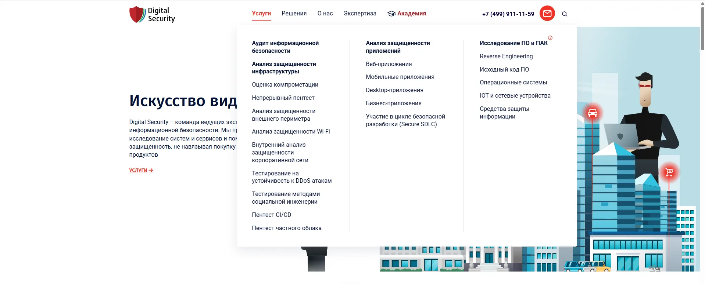
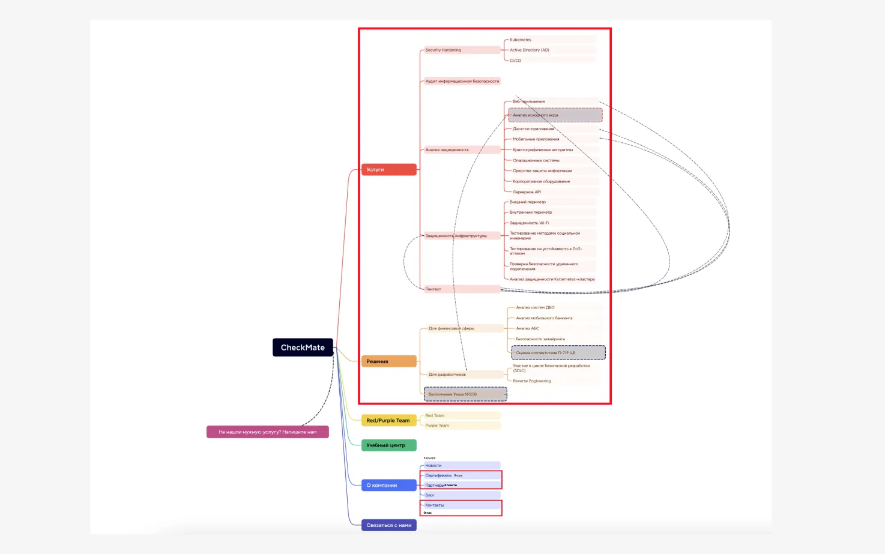
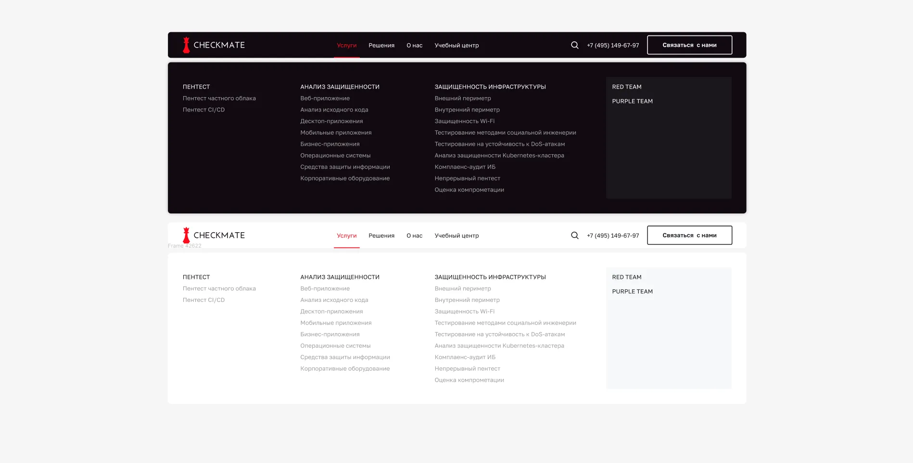
03UI-дизайн
Страницы, конструктор и UI-kit
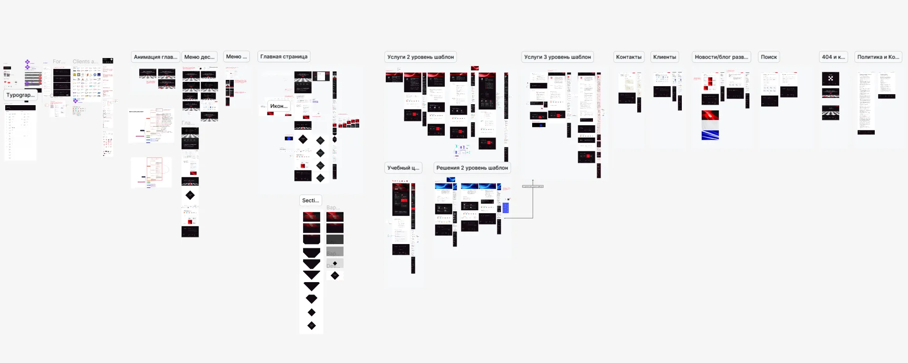
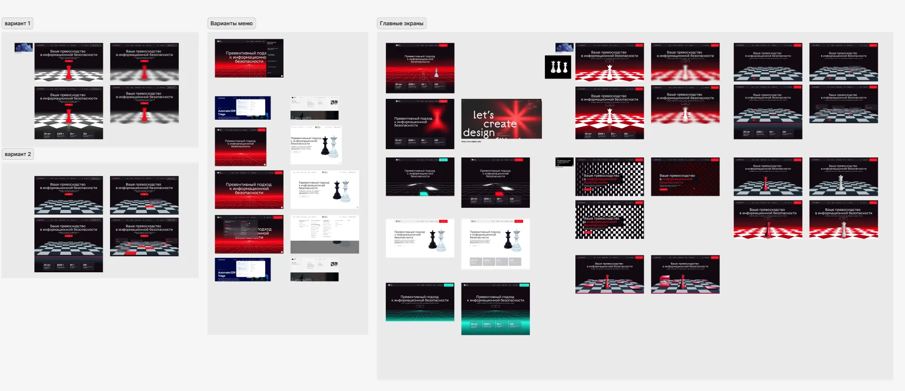
Примеры страниц первого уровня.
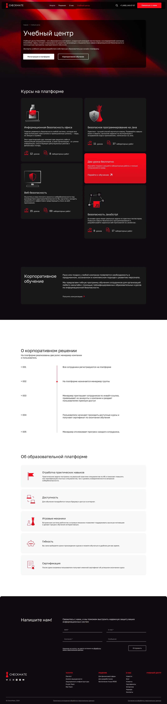
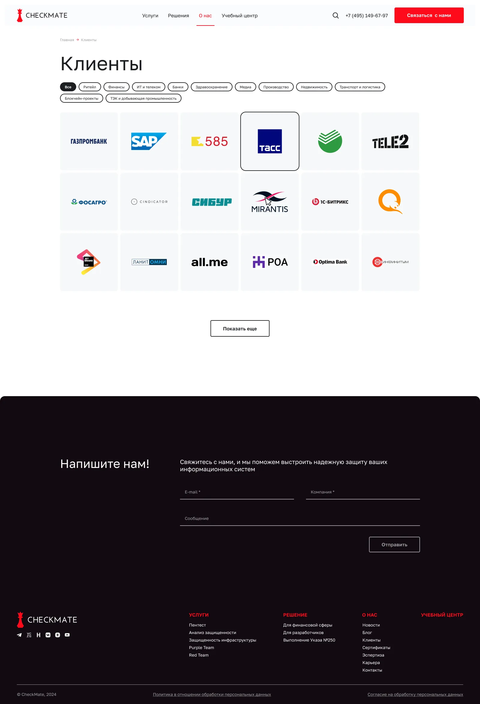
Для страниц второго уровня подготовлены уникальные дизайны: информация не повторялась, и унифицировать её было невозможно.
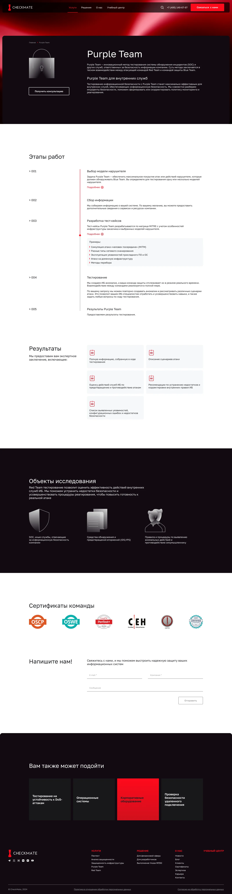
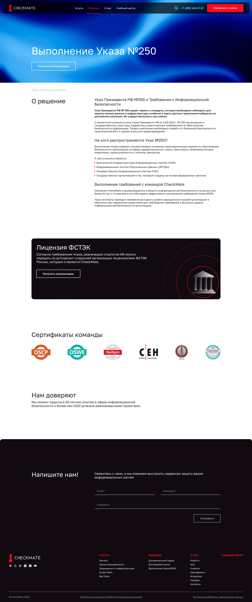
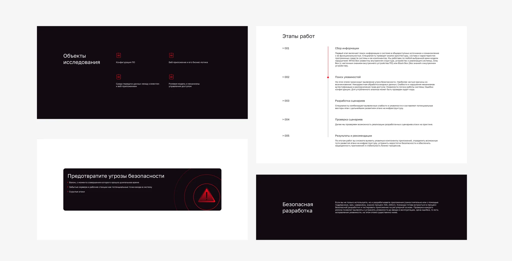
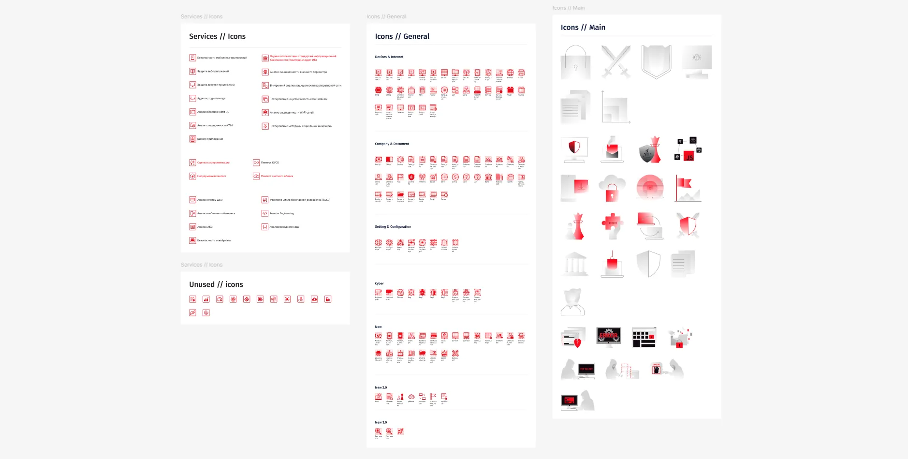
04Ключевые результаты
Уровни меню3вместо запутанной структуры
Блоков в конструкторе12с ресайзами